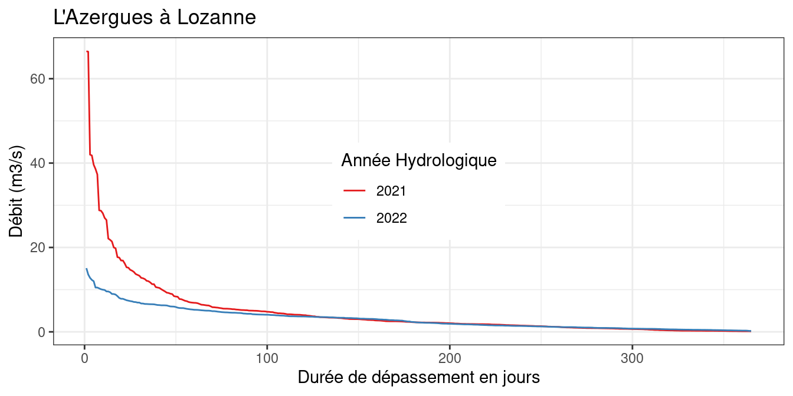

Chapitre 1 Données et statistiques descriptives
Les chroniques de débit issues de stations hydrométriques constitueront les données de base utilisées dans ce document. Dans un souci de simplicité, la plupart des exemples utilisent des débits journaliers, mais les méthodes statistiques présentées s’appliquent également à des débits à d’autres pas de temps (horaire, mensuel ou pas de temps variable). De manière plus générale, elles s’appliquent également à d’autres variables hydrométéorologiques (pluies, températures, vent, etc.) et sont également utilisées dans de nombreux autres domaines (sociologie, economie etc.).
La plupart des analyses statistiques ne s’effectuent pas directement sur la chronique initiale, mais plutôt sur des séries de variables hydrologiques qui sont extraites, par exemple, de la chronique de débits journaliers. Ces variables ont pour but de caractériser de manière quantitative le phénomène étudié (les crues, les étiages, la ressource). L’objectif de ce chapitre est tout d’abord de présenter quelques approches permettant de définir des variables hydrologiques en basses, moyennes et hautes eaux. Cette présentation ne sera pas exhaustive (les possibilités sont infinies…), et cherchera plutôt à illustrer la grande diversité de variables que l’hydrologue peut être amené à étudier. Dans un second temps, nous présenterons quelques méthodes de statistiques descriptives qui visent à résumer l’information contenue dans les séries de variables.
1.1 Définition de variables hydrologiques
En général, une variable hydrologique est calculée en deux étapes :
- Filtrage de la chronique initiale. Par exemple, il est fréquent de travailler à partir de la série des débits moyennés sur \(d\) jours.
- Extraction de la variable sur la série filtrée. Par exemple, on pourra calculer le minimum annuel, le nombre de jours passés sous un seuil de bas débit, etc.
1.1.1 Filtrage et autre pré-traitements
Le pas de temps de la chronique initiale n’est pas forcément adapté à l’étude du phénomène d’intérêt. Par exemple, pour les bassins à crue lente, le débit de pointe à un pas de temps fin n’est pas forcément la variable la plus pertinente. De même, si l’on s’intéresse aux écoulements liés à la fonte nivale, on pourra souhaiter « gommer » les variations rapides de débit dues à des faibles pluies se superposant au signal de fonte.
Ces considérations conduisent parfois à filtrer la chronique initiale avant le calcul des variables. Les quatre filtres présentés dans ce document sont les suivants :
- Moyenne mobile calculée sur une fenêtre de \(d\) jours.
- Minimum mobile calculé sur une fenêtre de \(d\) jours.
- Base Flow Separation (BFS), qui vise à séparer le débit de base du débit de ruissellement.
- Sequent Peak Algorithm (SPA), qui calcule un déficit de volume cumulé.
Le premier filtre est largement connu et utilisé en routine pour le calcul de débits caractéristiques. Les filtres suivants sont moins utilisés en pratique, mais sont présentés afin d’illustrer d’autres choix possibles pour le calcul de variables hydrologiques.
Dans le cas du filtrage par moyenne ou minimum mobile, la série filtrée \(S_t\) est obtenue à partir de la chronique journalière initiale \(q_t\) de la manière suivante :
\[ \begin{equation} \text{Moyenne mobile sur } d \text{ jours : } S_t=\frac{1}{d} \sum_\limits{k=t-d/2}^{t+d/2}q_k \\ \text{Minimum mobile sur } d \text{ jours : } S_t=\min_{k \in [t-d/2;t+d/2]}{q_k} \tag{1.1} \end{equation} \]
Dans l’équation (1.1), la fenêtre de calcul est centrée sur le pas de temps courant \(t\). Il est fréquent (notamment en statistiques) de calculer la moyenne ou le minimum sur une fenêtre \([t-d ;t]\) précédant le pas de temps courant \(t\). Ceci ne modifie que marginalement la série filtrée. Ces deux filtres ont pour effet de lisser les hydrogrammes en limitant les variations de débit à l’échelle journalière (cf. exemples en Figure 1.1). Le débit moyen sur \(d\) jours est proportionnel à un volume, alors que le débit minimum sur \(d\) jours peut être interprété comme la valeur continûment dépassée sur \(d\) jours consécutifs. Ce dernier filtre est notamment utilisé pour l’étude des crues.

Figure 1.1: Exemples de filtres appliqués à une chronique de débits journaliers (l’Azergues à Lozanne).
Les filtres BFS et SPA sont moins couramment utilisés pour le calcul de variables hydrologiques, et sont donc présentés plus en détail ci-dessous. L’objectif du BFS est d’estimer le débit de base dans l’hydrogramme des débits journaliers. Plusieurs algorithmes existent dans la littérature. Nous présentons ici celui présenté par Tallaksen and Van Lanen (2004) :
- La série de débits journaliers est découpée en \(n\) blocs consécutifs (non-recouvrant) de \(d\) jours.
- Les valeurs minimales dans chaque bloc sont calculées, et sont notées \(m_1,\ldots,m_n\)
- Pour \(k = 2,\ldots,n-1\) :
- Si \(w \times m_k < min(m_{k-1}, m_{k+1})\), \(m_k\) est considéré comme un point pivot.
- La série filtrée est finalement obtenue en interpolant linéairement entre les points pivots.
L’algorithme BFS dépend de deux paramètres \(d\) et \(w\). Tallaksen and Van Lanen (2004) recommandent des valeurs typiques égales à \(d\) = 5 jours et \(w = 0.9\), qui donnent généralement des résultats très satisfaisants.
La Figure 1.2 présente un exemple d’application de ce filtre à une série de débits journaliers, pour un bassin à forte influence nivale (la Garonne à Montrejeau, 2100 km\(^2\)). Ce filtre est particulièrement intéressant si l’on s’intéresse à la caractérisation de l’onde de fonte nivale, puisqu’il permet de gommer les variations de débit vraisemblablement dues à des pluies. Par exemple, le maximum annuel de la série filtrée par BSF est une variable plus robuste pour caractériser l’onde de fonte que le maximum annuel des débits bruts.
Signalons que le BFS est également à la base d’un indice couramment utilisé, nommé le Base Flow Index (BFI), définit comme le ratio entre le débit de base (estimé par l’algorithme BFS) et le débit total. Le BFI mesure ainsi la part des apports stockés (e.g. apports souterrains ou écoulements de fonte) par rapport aux débits issus du ruissellement rapide.

Figure 1.2: Application du filtre BFS pour un bassin à influence nivale
Le filtre SPA est quant à lui plutôt orienté vers l’étude des étiages. Selon Tallaksen and Van Lanen (2004), cet algorithme a été initialement développé pour le dimensionnement des réservoirs, mais il peut aussi être appliqué pour cumuler le déficit de volume d’une série de débits journaliers par rapport à un seuil de bas débit (que l’on appellera ici \(q_0\)).
Soient \(q_t\) le débit journalier et \(q_0\) un seuil de bas débit. La série filtrée par SPA est définie par :
\[ \begin{equation} S_t=\max(0;S_{t-1}+q_0-q_t) \tag{1.2} \end{equation} \]
La Figure 1.3 illustre l’application du filtre SPA. Les périodes durant lesquelles la série filtrée est nulle correspondent aux périodes de débits soutenus. Inversement, les événements d’étiages correspondent à des valeurs de SPA positives. Ce filtre possède donc la particularité intéressante d’ « inverser » l’hydrogramme, les plus fortes valeurs correspondant aux étiages les plus sévères. L’inconvénient de ce filtre est sa sensibilité aux données manquantes, du fait de sa définition récursive.
Figure 1.3: Exemple d’application du filtre SPA sur une chronique de débits journaliers.
En plus de l’utilisation de filtres, signalons également deux prétraitements importants utilisés en pratique :
- Définition de l’année hydrologique : suivant le phénomène auquel on s’intéresse, l’utilisation de l’année civile n’est pas compatible avec la périodicité naturelle du phénomène. Pour un bassin donné, si l’on s’intéresse aux hautes eaux, il sera judicieux de faire débuter l’année hydrologique au moins le plus sec (i.e. ayant la moyenne interannuelle la plus faible), et inversement pour les basses eaux. Ce choix dépend évidemment du régime hydrologique : en France métropolitaine, l’année hydrologique de hautes eaux débutera ainsi en fin d’été pour un bassin pluvial, mais au milieu de l’hiver pour un régime nival.
- Saisonnalisation : il arrive fréquemment de restreindre l’analyse à une période particulière de l’année. Par exemple, si l’on s’intéresse à la fonte nivale, on pourra se contenter d’étudier les débits printaniers et estivaux.
Dans la suite de cette section, ces prétraitements seront omis par souci de simplicité : nous utiliserons systématiquement le terme « année », étant entendu que l’année pourra être remplacée par « l’année hydrologique » ou « la saison » suivant le phénomène étudié.
1.1.2 Variables pour les moyennes eaux
La variable la plus utilisée pour l’étude des moyennes eaux est le débit moyen annuel (parfois appelé module annuel) : il s’agit tout simplement de la moyenne des débits observés en une année donnée.
Il est également possible d’étudier des variables issues de la courbe des débits classés annuelle. Cette courbe est obtenue en classant, pour une année donnée, les débits par ordre décroissant (Figure 1.4). On peut alors lire sur la courbe la durée annuelle de dépassement d’un débit donné. Des variables descriptives des moyennes eaux peuvent être extraites de cette courbe en calculant, par exemple, le débit dépassé pendant la moitié de l’année (débit annuel médian), ou plus généralement pendant \(p\)% de l’année (en choisissant une valeur de \(p\) pas trop éloignée de 50% si l’on s’intéresse aux moyennes eaux).

Figure 1.4: Exemples de courbes annuelles des débits classés.
1.1.3 Variables pour les hautes eaux
Nous allons nous intéresser aux deux principales techniques utilisées par les hydrologues pour l’étude des crues: l’échantillonnage par valeurs maximales annuelles (MAXAN) et l’échantillonnage par valeurs supérieures à un seuil (SUPSEUIL).
L’échantillonnage MAXAN consiste à sélectionner chaque année le débit observé le plus fort. L’échantillonnage SUPSEUIL consiste quant à lui à choisir un seuil de haut débit, puis à sélectionner les pointes des évènements dépassant ce seuil. Dans la pratique, plutôt qu’un seuil, on se donne en général un nombre d’évènements à sélectionner par an (en moyenne), et par itérations successives, on calcule le seuil conduisant à cet objectif.
Chacune de ces méthodes présente des avantages et des inconvénients, notamment dans l’optique d’une analyse statistique. La mise en œuvre de l’approche MAXAN est très simple. En ne sélectionnant qu’un unique événement par an, on évite le risque de sélectionner deux valeurs de débits correspondant au même événement de crue (le risque de sélectionner, par exemple, un débit le 31 décembre 2000 et un autre le 1er janvier 2001 est limité par l’utilisation d’années hydrologiques). L’inconvénient est d’ignorer un certain nombre d’évènements lors des années où beaucoup de crues se sont produites (par exemple, année XXX-XXX dans la Figure 1.5), et inversement de prendre en compte des évènements peu importants lors des années peu actives (par exemple, année XXX-XXX). L’homogénéité de l’échantillon n’est donc pas optimale.

Figure 1.5: Illustration des échantillonnages MAXAN et SUPSEUIL pour l’Azergues à Lozanne.
L’approche SUPSEUIL est plus difficile à mettre en œuvre. En effet, il faut ajouter des contraintes d’indépendance afin de ne pas échantillonner plusieurs fois le même événement hydrologique (cf. exemple en 1.6). On impose en général une contrainte d’espacement temporel minimal entre deux pointes sélectionnées, ainsi qu’une contrainte de redescente vers un débit de base. Bien choisies, ces contraintes permettent de garantir l’indépendance de l’échantillon (cf. Lang (1995) pour un état de l’art sur la technique d’échantillonnage SUPSEUIL). Néanmoins, l’approche SUPSEUIL possède plusieurs avantages par rapport à l’échantillonnage MAXAN :
- Il est possible d’étoffer l’échantillon disponible pour l’analyse statistique en choisissant, en moyenne, plus d’un événement par an.
- Cet échantillon sera également plus homogène que celui fournit par la méthode MAXAN : ainsi, il sera possible de ne sélectionner aucune valeur pour les années peu actives (par exemple, année XXX-XXX dans la Figure 1.5), et inversement d’en sélectionner plusieurs pour les années ayant connu plusieurs événements importants (par exemple, année XXX-XXX).
- L’approche SUPSEUIL conduit à s’intéresser au processus d’occurrence des crues : on peut par exemple définir les variables « nombre d’événements sélectionnés chaque année », ou « durée entre deux événements successifs ».

Figure 1.6: Illustration de la nécessité des contraintes d’indépendance pour l’échantillonnage SUPSEUIL.
Signalons que les approches MAXAN et SUPSEUIL peuvent s’appliquer sur des séries préalablement filtrées. On peut notamment appliquer les filtres moyenne / minimum mobile sur une durée \(d\) (avec par exemple \(d\) = durée caractéristique de crue). De plus, il existe de très nombreuses autres variables visant à caractériser les crues. Citons notamment :
- Variables issues de la courbe annuelle des débits classés, par exemple, débit dépassé 5% de l’année.
- Volume annuel cumulé au-dessus d’un seuil de haut débit.
- Variables décrivant les hydrogrammes de crue, par exemple, temps de montée / descente, asymétrie, etc.
1.1.4 Variables pour les basses eaux
Les étiages sont des phénomènes physiques complexes qui ne peuvent pas être complètement décrits sur la base d’une unique valeur numérique. L’ouvrage de Tallaksen and Van Lanen (2004) fournit un panorama très complet des différents indices utilisables pour décrire les étiages. En général, les caractéristiques d’étiages les plus couramment étudiées sont la durée, le déficit de volume, et le pic (i.e. débits les plus bas).
1.1.4.1 Débit minimum annuel (MINAN)
Il correspond au pic de l’étiage, et constitue l’équivalent de l’approche MAXAN pour les basses eaux. Le débit minimum annuel est rarement calculé directement sur la chronique journalière (ou à pas de temps plus fin) initiale. On préfère généralement calculer le débit mensuel minimum (noté QMNA, correspondant au mois calendaire ayant le plus faible débit moyen), ou appliquer préalablement un filtre « moyenne mobile » sur \(d\) jours. Les durées les plus fréquemment utilisées (en France) sont 3, 7 et 30 jours, conduisant aux variables VCN3, VCN7 et VCN30.
1.1.4.2 Variables relatives à un seuil de bas débit (INFSEUIL)
De manière similaire à l’approche SUPSEUIL utilisée pour l’étude des crues, on peut identifier des événements d’étiage comme des périodes durant lesquelles le débit est resté inférieur à un seuil donné. Néanmoins, contrairement à l’approche SUPSEUIL, il est très difficile de sélectionner plusieurs étiages indépendants au cours d’une même année. La Figure 1.7 illustre la définition de ces événements d’étiage : au cours d’une année hydrologique donnée, XXX événements sont identifiés dans cet exemple. Il est néanmoins discutable d’étudier ces cinq événements séparément : d’un point de vue hydrologique, il s’agit en fait du même événement d’étiage, entrecoupé par quelques remontées de débit dues à des pluies isolées. Pour cette raison, on préférera cumuler les caractéristiques de ces cinq événements sur l’année. Plus précisément, on peut calculer les variables suivantes:
- Déficit de volume : Il s’agit du déficit de volume par rapport au seuil de bas débit, cumulé sur la totalité de l’année hydrologique (aire en rouge sur la Figure 1.7).
- Durée de l’étiage : Elle est définie comme le nombre de jours où le débit est resté inférieur au seuil de bas débit (somme des durées des XXX événements d’étiage sur la Figure 1.7).

Figure 1.7: Identification des périodes d’étiages à partir d’un seuil de bas débit.
1.1.4.3 Variables basées sur la série filtrée par SPA
La série filtrée par SPA fournit un moyen naturel de définir des événements d’étiage et d’en déduire des variables caractéristiques. Par exemple, on pourra définir un événement d’étiage comme une période durant laquelle la série SPA est restée strictement positive. On peut alors aisément calculer la durée de l’événement, tandis que le maximum de la série SPA au cours de l’événement décrit le déficit de volume cumulé au pic d’étiage. Par rapport aux variables de durée et de déficit de volume présentées précédemment, l’avantage est que cette approche évite de sectionner un étiage qui s’étendrait sur plusieurs années, comme illustré en Figure 1.8 dans le cas de l’étiage de 1921.

Figure 1.8: Illustration de l’intérêt du filtre SPA dans le cas d’un étiage pluriannuel (étiage de 1920-1921 sur la Zorn à Waltenheim)
Concluons cette section en remarquant que la liste de variables d’étiage dressée dans ce document est loin d’être exhaustive. En particulier, on pourra encore une fois utiliser la courbe annuelle des débits classés pour extraire des variables descriptives de l’étiage (par exemple, débit dépassé 90% de l’année).
1.1.5 Variables de saisonnalité
Les variables présentées jusqu’ici sont des variables de quantité. On s’intéresse également parfois à la saisonnalité des événements hydrologiques. Par exemple, les dates de début et de fin d’étiage peuvent être importantes en termes de gestion de la ressource en eau.
Des variables de saisonnalité peuvent aisément être déduites des variables de quantité exposées précédemment, en utilisant par exemple la date du maximum ou du minimum annuel, les dates de dépassement de seuil, etc. D’autres variables peuvent être calculées en utilisant le concept de centre de masse. Ce concept a été introduit par Stewart, Cayan, and Dettinger (2005) dans le cadre de l’étude de la saisonnalité de l’onde de fonte pour des cours d’eau à influence nivale. Dans cette publication, le centre de masse est défini comme la date à laquelle 50% du volume de fonte a été écoulé.
Cette définition peut aisément être généralisée d’une part pour l’étude d’autres types d’événements hydrologiques (crues ou étiages), d’autre part pour caractériser le début et la fin des événements (sans se limiter au « pic » de l’événement).
Dans le cas des étiages par exemple, on définira le centre de masse à \(p\)% comme la date à laquelle \(p\)% du déficit de volume annuel est atteint. En utilisant par exemple les centres de masse à 10%, 50% et 90%, on définit respectivement le début, le centre et la fin de la période d’étiage (Figure 1.9. On procèdera de même pour les crues, mais en considérant plutôt le volume écoulé au-dessus d’un seuil de haut débit.
Figure 1.9: Exemple d’indices de saisonnalité : dates de début, centre et fin d’étiage.
1.1.6 Discussion : choix des variables hydrologiques
Dans certains cas le choix de la variable hydrologique à étudier est imposé. C’est le cas notamment pour les variables « réglementaires » (module ou QMNA pour les débits réservés ou les autorisations de prélèvement).
Si ce n’est pas le cas, le choix de la variable d’étude n’est ni anodin ni trivial. Par exemple, si l’on s’intéresse au régime des étiages, de nombreuses variables peuvent être calculées pour décrire la durée, l’intensité ou le déficit de volume des étiages (cf. section 1.1.4). Ainsi, ce que l’on appellera (de manière abusive car ambiguë) « l’étiage décennal », par exemple, correspondra à des phénomènes potentiellement bien différents suivant que l’on parle de durée, de volume ou d’intensité. En conséquence, il peut s’avérer intéressant de décrire le phénomène que l’on souhaite caractériser (crue ou étiages) par plusieurs variables hydrologiques.
Les principaux éléments guidant le choix du ou des variables à étudier sont les suivants :
- Objectifs de l’analyse. C’est certainement le premier aspect à évaluer : étant donnés les enjeux, quel aspect du phénomène hydrologique cherche-t-on à caractériser en priorité ? Par exemple, certains ouvrages seront vulnérables à des débits de pointe élevés, d’autre à des durées de submersion élevées.
- Propriétés du bassin versant à étudier. A titre d’illustration, un débit de pointe horaire est pertinent pour l’étude des crues d’un petit bassin cévenol, mais est moins adapté à l’étude des bassins à crues lentes comme la Somme par exemple, pour lesquels on cherchera plutôt à caractériser les crues en termes de volume ou de durée.
- Eviter la redondance d’information. D’un point de vue plus statistique, il n’est pas forcément utile de sélectionner plusieurs variables très corrélées. Ainsi, si l’on cherche à caractériser le phénomène d’étiage dans son ensemble, on cherchera à utiliser quelques variables qui présentent des niveaux de corrélation limités.
1.2 Statistiques descriptives
Dans cette partie, nous allons nous intéresser à la description d’une série de données représentant une des variables hydrologiques présentées précédemment. L’objectif est notamment de présenter quelques graphiques classiques, et de résumer l’information contenue dans les données grâce à quelques grandeurs caractéristiques.